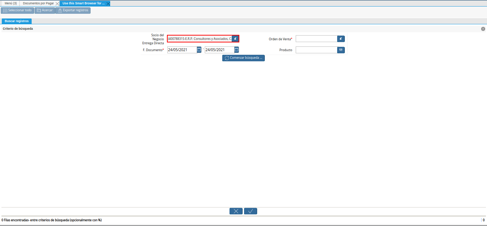
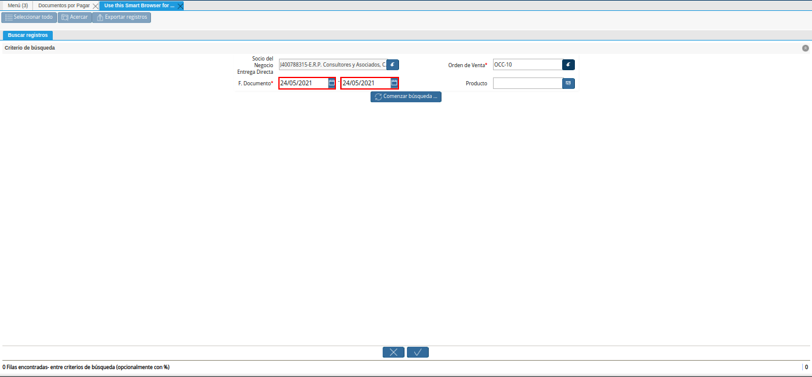
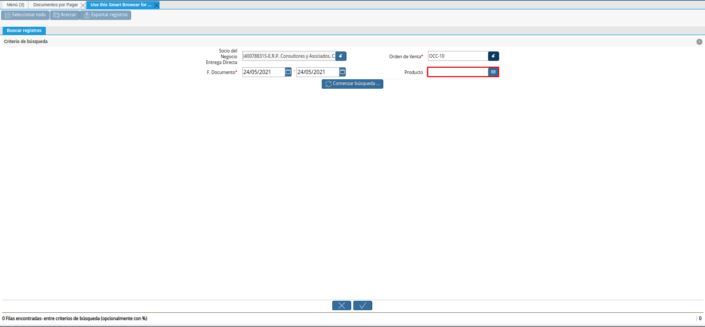
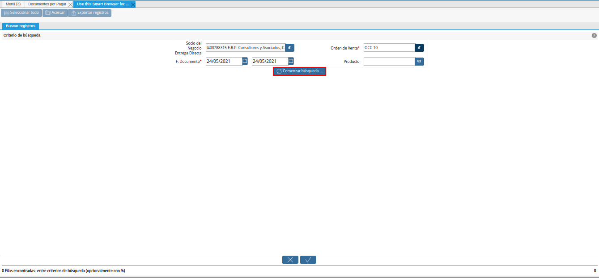
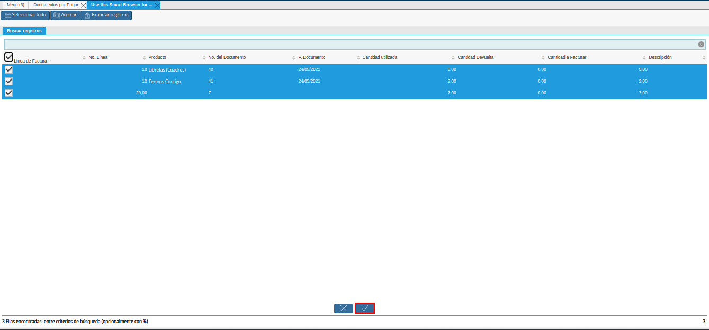
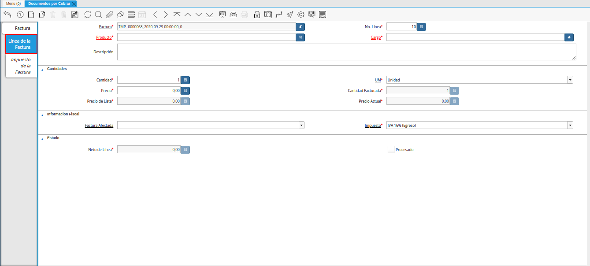
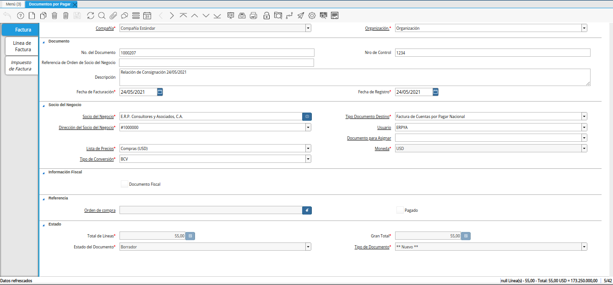
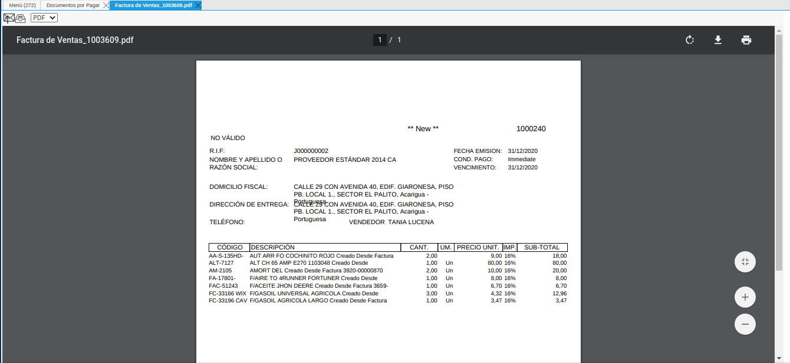
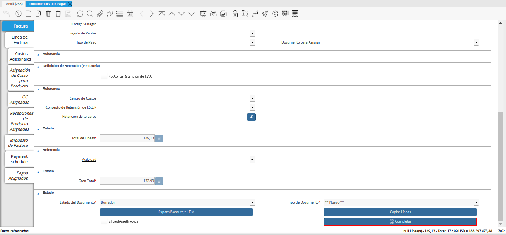

Relación de Ventas en Consignación¶
Para la relación de las ventas en consignación, es obligatoria la configuración de las mismas. Dicha configuración se encuentra explicada en el material Configuración de Ventas en Consignación, elaborado por ERPyA.
Adicional a ello, la venta no debe estar incluida en ningún documento por pagar. De lo contrario, el registro no podrá ser visualizado al momento ser cargada la información a la pestaña “Línea de Factura”, de la ventana “Documentos por Pagar”.
Reporte de Venta de Productos por Proveedor¶
Genere el reporte “Venta de Productos por Proveedor”, filtrando por el socio del negocio proveedor y el rango de fecha de facturación.
Imagen 1. Reporte de Venta de Productos por Proveedor
Note
El reporte “Venta de Productos por Proveedor”, se encuentra explicado de manera detallada en el material Venta de Productos por Proveedor, elaborado por ERPyA.

Registrar Documento por Pagar¶
Realice el procedimiento regular para crear un documento por pagar, dicho procedimiento se encuentra explicado en el material Registro de Documento por Pagar, elaborado por ERPyA.
Note
El documento por pagar deber ser creado bajo las siguientes restricciones:
Descripción: Indicar el rango de fecha utilizado para generar el reporte “Venta de Productos por Proveedor”.
Fecha de Facturación: Fecha en la cual se crea el registro de factura por pagar (pre-factura)
Lista de Precios: Compras (VES)
Tipo de Conversión: BCV
Luego de cargar la información necesaria en la pestaña principal “Factura”, seleccione el icono “Proceso”, ubicado en la barra de herramientas de ADempiere.
Imagen 2. Icono Proceso de la Ventana Documentos por Pagar
Seleccione la opción “Crear Líneas desde Facturas de Entrega Directa”, desplegada por la selección del icono “Proceso”.
Imagen 3. Opción Crear Líneas desde Facturas de Entrega Directa

Podrá visualizar la ventana del proceso con diferentes campos que permiten filtrar la información de las ventas.
Note
La información a ser visualizada en el presente proceso, va a depender de las siguientes condiciones:
La información cargada en la orden de compra, dicha orden debe estar en estado “Completo”.
La información visualizada en el reporte Venta de Productos por Proveedor.
De no coincidir la información del reporte con la información visualizada en el presente proceso, debe realizar lo siguiente:
Verificar que se cumpla con la Configuración de Ventas en Consignación.
Verificar que el producto se encuentre incluido en una orden de compra, esto lo puede realizar generando el reporte Detalle de la Orden.
Verificar que el producto no se encuentre en otro documento por pagar, esto lo puede realizar generando el reporte Detalles de Facturas y Margen.
Imagen 4. Ventana del Proceso Crear Líneas desde Facturas de Entrega Directa
En el campo “Socio del Negocio”, podrá visualizar el socio del negocio seleccionado en la pestaña principal “Factura”.

Imagen 5. Campo Socio del Negocio
Seleccione el check “Entrega Directa Asignada”, para filtrar la búsqueda de información por entrega directa asignada.
Imagen 6. Check Entrega Directa
Seleccione en el campo “Clase de Producto”, la clase de producto para filtrar la búsqueda de información.
Imagen 7. Campo Clase de Producto
Seleccione en el campo “Grupo de Producto”, el grupo de producto para filtrar la búsqueda de información.
Imagen 8. Campo Grupo de Producto
Seleccione en el campo “Fecha de Facturación”, el rango de fecha de facturación para filtrar la búsqueda de información.

Imagen 9. Campo Fecha de Facturación
Seleccione en el campo “Agente Comercial”, el agente comercial para filtrar la búsqueda de información.
Imagen 10. Campo Agente Comercial
Seleccione en el campo “Categoría del Producto”, la categoría del producto para filtrar la búsqueda de información.
Imagen 11. Campo Categoría del Producto
Seleccione en el campo “Clasificación de Producto”, la clasificación de producto para filtrar la búsqueda de información.
Imagen 12. Campo Clasificación de Producto
Seleccione en el campo “Producto”, el producto para filtrar la búsqueda de información.

Imagen 13. Campo Producto del Proceso
Seleccione en el campo “Orden de Venta”, la orden de venta para filtrar la búsqueda de información.
Imagen 14. Campo Orden de Venta
Seleccione la opción “Comenzar Búsqueda”, para filtrar la información en base a lo seleccionado anteriormente.

Imagen 15. Opción Comenzar Búsqueda
Seleccione todos los registros filtrados por el proceso.
Imagen 16. Selección de Registros
Seleccione la opción “OK”, para cargar a la pestaña “Línea de Factura”, la información seleccionada anteriormente.

Imagen 17. Opción OK


Seleccione el icono “Refrescar”, ubicado en la barra de herramientas de ADempiere, para actualizar la ventana “Documentos por Pagar” y se pueda visualizar la información cargada desde el proceso.
Imagen 18. Icono Refrescar

Seleccione la pestaña “Línea de Factura”, para revisar y verificar la información cargada desde el proceso.

Imagen 19. Pestaña Línea de Factura
Seleccione la pestaña principal “Factura”, para completar el registro del documento por pagar.

Imagen 20. Pestaña Principal Factura
Seleccione el icono “Imprimir”, ubicado en la barra de herramientas de ADempiere.
Imagen 21. Icono Imprimir
Podrá visualizar la ventana “Factura de Ventas”, con el reporte del documento por pagar creado anteriormente en estado “Borrador”.

Imagen 22. Ventana Factura de Ventas
Seleccione el icono “Imprimir”, de la ventana “Factura de Ventas”.
Imagen 23. Icono Imprimir
Reporte Detalles de Facturas y Margen¶
Genere el reporte “Detalles de Facturas y Margen”, filtrando por los siguientes campos.
Transacción de Ventas: No
Fecha de Facturación: 28/12/2020 - 31/12/2020
Factura: 1000240
Note
El reporte “Detalles de Facturas y Margen”, se encuentra explicado de manera detallada en el material Detalles de Facturas y Margen, elaborado por ERPyA.
Imagen 24. Reporte Detalles de Facturas y Margen

Seleccione en el campo “Formato de Impresión”, el formato de impresión “Relación de Productos en Consignación”, para visualizar el reporte “Detalles de Facturas y Margen”, convertido.
Imagen 25. Reporte Detalles de Facturas y Margen Convertido
Warning
Recuerde que debe tener cargada a la fecha, una tasa de cambio correspondiente al tipo de conversión seleccionado en el documento por pagar (pre-factura).
Es importante descargar el reporte en formato PDF o imprimir el mismo, para entregar una copia al proveedor y otra a cuentas por pagar.

Adecuación del Documento por Pagar¶
Luego de que el proveedor entrega la factura a cuentas por pagar, se debe comparar la pre-factura con la misma y verificar los datos, para luego ir modificando sus campos hasta que la pre-factura sea igual a la factura entregada por el proveedor. Para ello, debe realizar el siguiente procedimiento.
Ubicar la pre-factura que se encuentra en estado “Borrador”, buscando por número de documento en la ventana “Documentos por Pagar”.
Imagen 25. Pre-Factura en Borrador

Introduzca en el campo “No. del Documento”, el número de documento que contiene la factura entregada por el proveedor.
Imagen 26. Campo No del Documento

Seleccione en el campo “Fecha de Facturación”, la fecha de facturación que contiene la factura entregada por el proveedor.
Imagen 27. Campo Fecha de Facturación

Seleccione en el campo “Fecha Contable”, la fecha contable que contiene la factura entregada por el proveedor.
Imagen 28. Campo Fecha Contable

Introduzca en el campo “Descripción”, una breve referencia del rango de ventas utilizado para generar los documentos por pagar.
Imagen 29. Campo Descripción

Seleccione en el campo “Lista de Precios”, la lista de precios que contiene la factura entregada por el proveedor.
Imagen 30. Campo Lista de Precios

Seleccione en el campo “Tipo de Conversión”, el tipo de conversión que contiene la factura entregada por el proveedor.
Imagen 31. Campo Tipo de Conversión

Introduzca en el campo “Nro de Control”, el número de control que contiene la factura entregada por el proveedor.
Imagen 32. Campo Nro de Control

Seleccione el icono “Proceso”, ubicado en la barra de herramientas de ADempiere
Imagen 33. Icono Proceso
Seleccione la opción “Recalcular Tasa para Líneas de Factura”, para recalcular los precios de los productos que contiene la pre-factura, en base a la lista de precios y tipo de conversión seleccionada anteriormente.
Imagen 34. Opción Recalcular Tasa para Líneas de Factura
Podrá visualizar la ventana del proceso “Recalcular Tasa para Líneas de Factura”, para recalcular los precios de los productos cargados a la línea de la factura.
Imagen 35. Ventana del Proceso Recalcular Tasa para Líneas de Factura
Seleccione la opción “OK”, para ejecutar el proceso.
Imagen 36. Opción OK del Proceso Recalcular Tasa para Líneas de Factura


Seleccione la pestaña “Línea de Factura”, para verificar que la cantidad y los precios de los productos que contiene la factura sea la misma que contiene la factura entregada por el proveedor.
Imagen 37. Pestaña Línea de Factura

Seleccione la pestaña principal “Factura”, y verifique que el monto total de la factura se el mismo que contiene la factura entregada por el proveedor.
Imagen 38. Pestaña Principal Factura

Seleccione la opción “Completar”, ubicada en la parte inferior de la ventana “Documentos por Pagar”.

Imagen 39. Opción Completar
Seleccione la acción “Completar” y la opción “OK”.
Imagen 40. Acción Completar y Opción OK

Cuando el proveedor entrega a cuentas por pagar más de una factura correspondientes a una misma pre-factura, se debe realizar por cada una de ellas, el procedimiento Adecuación del Documento por Pagar, explicado anteriormente. Modificando en la pestaña “Línea de Factura” de la pre-factura, la cantidad de productos para adaptarla a la primera factura generada por el proveedor y posteriormente, registrar las otras facturas bajo el mismo procedimiento.
Warning
Se debe crear en ADempiere, las facturas entregadas por el proveedor exactamente iguales.